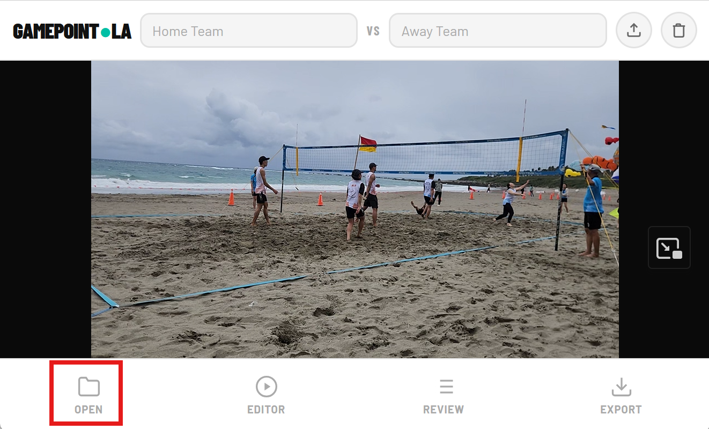
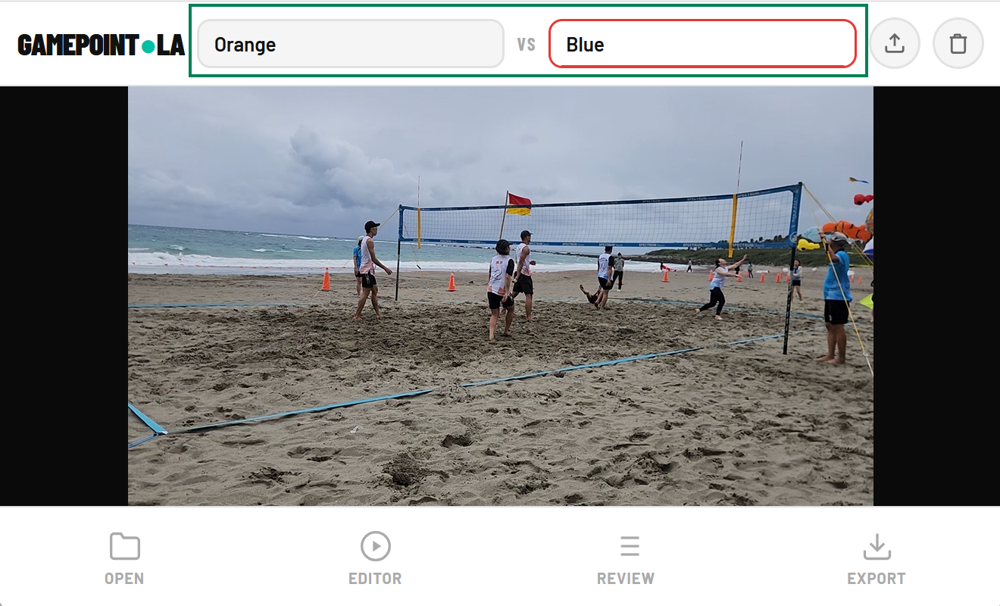
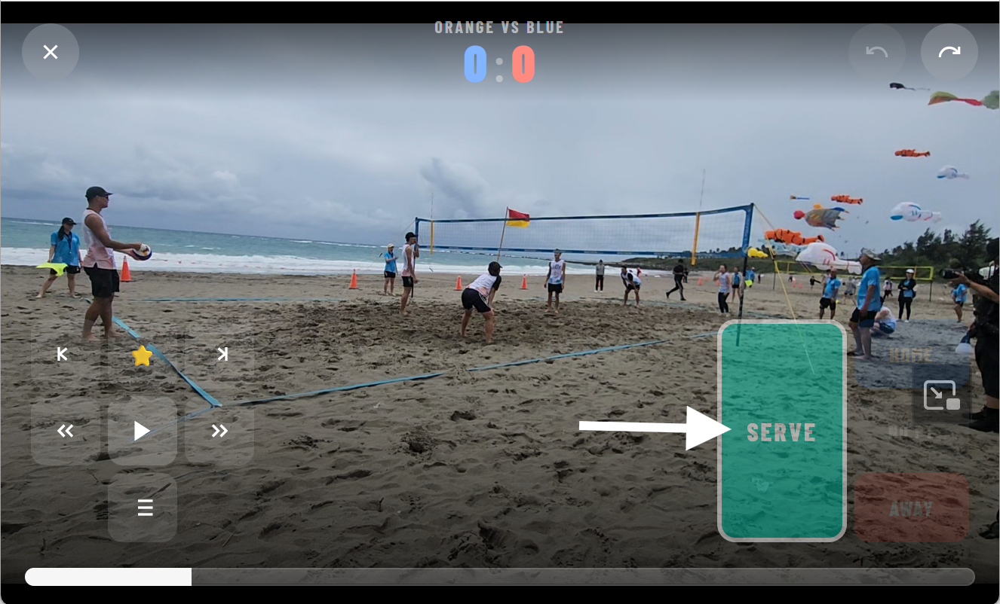
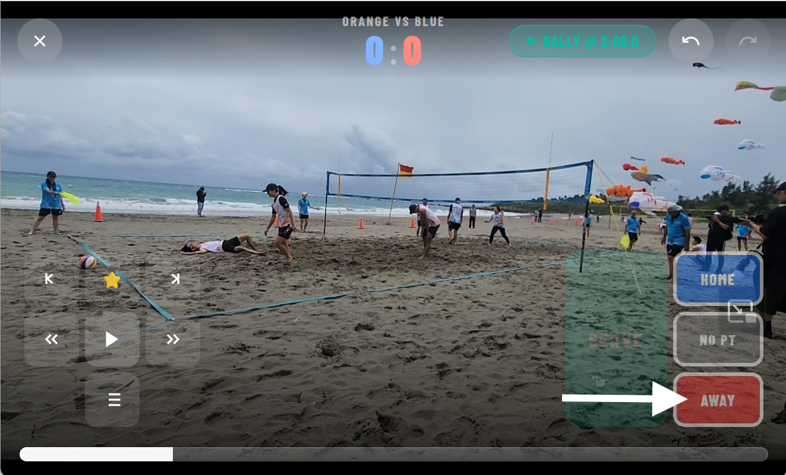
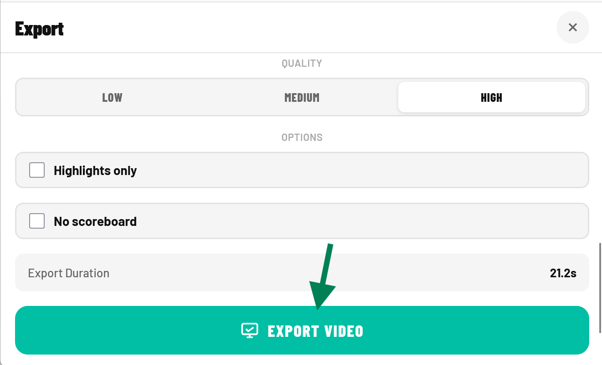

Load a sport video, drop markers on serves, points, and highlights, then export clean clips — no uploads, no accounts.
Start editingHow it works

Pick any video file from your device. No size limit, no upload wait.

Name the players or teams so your markers and exports are easy to identify.

Tap the marker button as the serve happens to drop a marker at that exact moment.

Drop a second marker when the point ends to define the full clip range.

Choose your markers, set in/out points, and export individual clips or a full highlight reel.
Features
Drop a marker at the exact frame. Label it as a serve, point, and/or highlight.
Export all clips or highlights only — processed locally, never uploaded.
Runs in your browser on desktop or mobile. Install it as an app on Android or iOS for offline use.
Your videos stay on your device. No server, no cloud, no account required.
Free, instant, private. No sign-up needed.
Start editingOr install as an app on your phone for offline access.